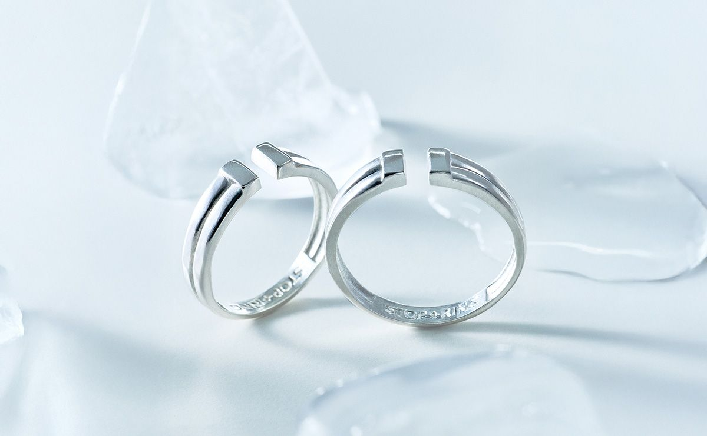
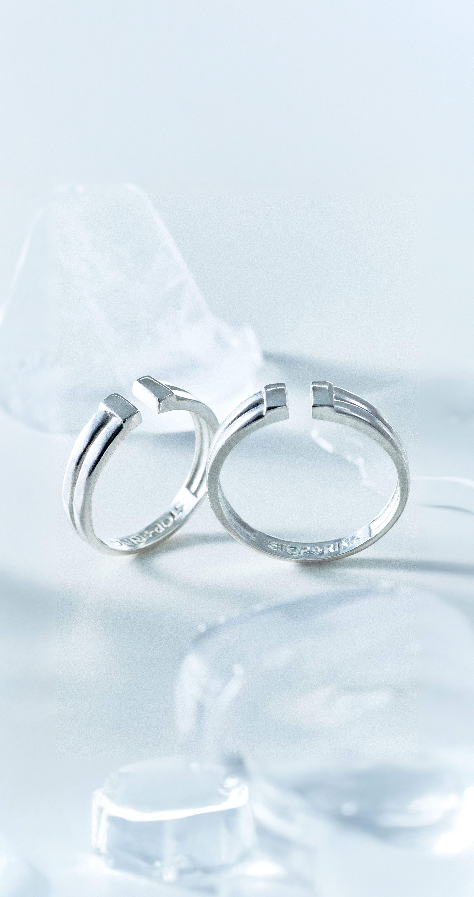


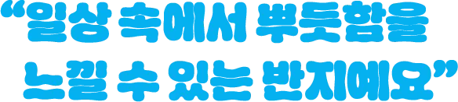

이 반지를 통해 지구 반대편에 있는
아프리카 마을이
스스로 자립할 수 있도록 도울 수 있어요.
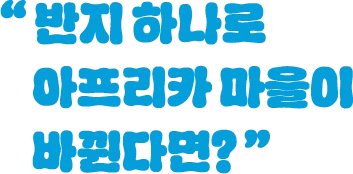
스탑링은 한 마을 전체가
스스로 살아갈 수 있도록 돕는 반지예요.
일회성 도움으로 끝나는 것이 아닌,
후원 없이도 살아갈 수 있도록
지속가능한 변화를 만들어 냅니다.
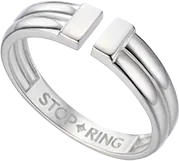
* 사진을 클릭하면 더 자세히 볼 수 있어요.
스탑링의 일시정지 모양처럼,
마을이 스스로 살아갈 수 있을 때
후원을 멈추고,
도움이 필요한 다음 마을로
변화를
이어갑니다.
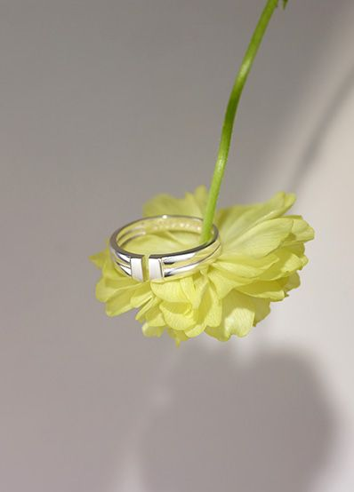
오픈링 특성상 핏 조절이 자유로워요.
SM(10~13호), ML(15~18호) 중
나에게 맞는 사이즈를 골라보세요!
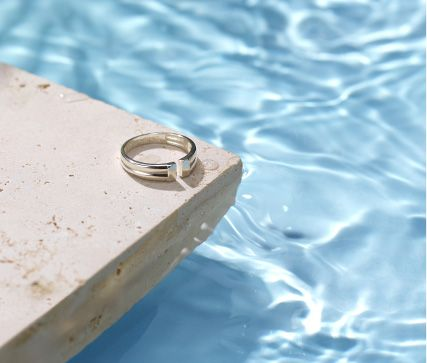
은은한 광택의 실버 925 소재로,
데일리로 끼기 딱 좋아요
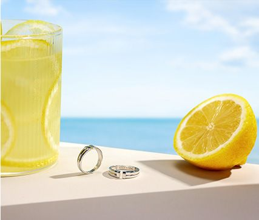
미니멀한 디자인으로 캐주얼부터 포멀까지,
어떤 룩에도 잘 어울려요
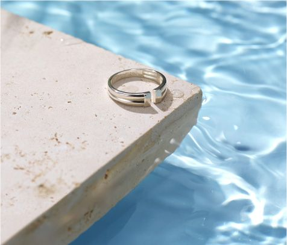
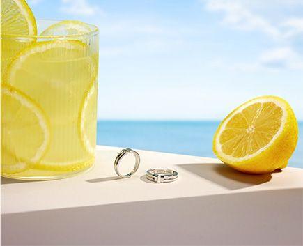
오픈링 특성상 핏 조절이 자유로워요.
SM(10~13호), ML(15~18호) 중
나에게 맞는 사이즈를 골라보세요!
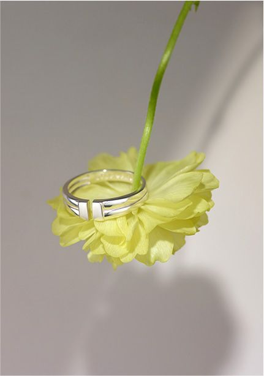
미니멀한 디자인으로 캐주얼부터 포멀까지,
어떤 룩에도 잘 어울려요
은은한 광택의 실버 925 소재로,
데일리로 끼기 딱 좋아요
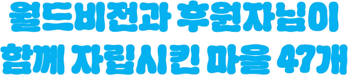
썸머아일랜드(1997-2012) 호아방(1998-2016) 썬더번(1998-2016) 트라미(1998-2018) 날라이흐(2000-2018) 비사카파트남(2003-2018) 로로키(2003-2018) 아르할가이(2005-2018) 보그라(2001-2019) 라쉬바(2008-2019) 버바스(2008-2019) 굴렐레(2003-2019) 노노(2003-2019) 군틀루펫(2003-2019) 부바네스와르(2003-2019) 뭄바이 이스트(2001-2020) 카총가(2005-2020) 나만요니(2005-2020) 모랑(2005-2020) 카인두(2006-2020) 뭄브와(2006-2020) 자비테흐난(2008-2020) 바얀흔거르(2006-2022) 오즈렌(2011-2022) 리브라즈드(2006-2022) 마들란감피시(2007-2022) 이스트숨바(2007-2022) 피지다곤(2002-2023) 미야난다르(2003-2023) 에네모레나 에너(2005-2023) 카킨도(2005-2023) 호브트(2007-2023) 에스페란사(2006-2023) 남부 제닌(2007-2023) 북동부 제닌(2007-2023) 빌라스푸르(2006-2023) 아샤딥(2005-2023) 디브라(2008-2023) 나항(2013-2023) 옌뚜이(2008-2023) 소로(2007-2024) 사모리(2007-2024) 락상(2006-2024) 음키웨니(2007-2024) 하브로(2006-2025) 마카본디(2009-2025) 카삼브야(2006-2025)
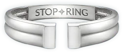
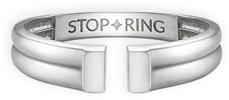
47개 마을은 이제 더 이상 후원에 의존하지 않습니다.
다음 마을에도 같은 변화가 일어날 수 있도록,
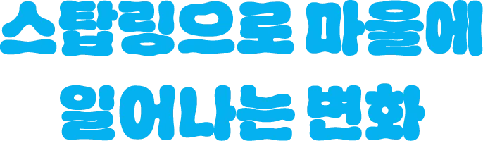
보내주시는 소중한 후원금은 식수위생, 보건영양, 교육, 생계자립 등
마을과 아이들을 살리는 지역개발사업을 위해 사용됩니다.
스탑링은 어떻게 받을 수 있나요?
스탑링은 언제 받을 수 있나요?
스탑링의 사이즈는 어떻게 되나요?
| 사이즈 | 호수 | 손가락 둘레 | 반지 안지름 |
|---|---|---|---|
| SM | 10호-13호 | 53mm -56mm |
16mm -17mm |
| ML | 15호-18호 | 58mm -61mm |
17.66mm -18.66mm |
| *KS표준 사이즈 기준 | |||
스탑링의 재질은 무엇인가요?
배송지를 변경하고 싶어요.
스탑링도 교환이나 반품이 되나요?